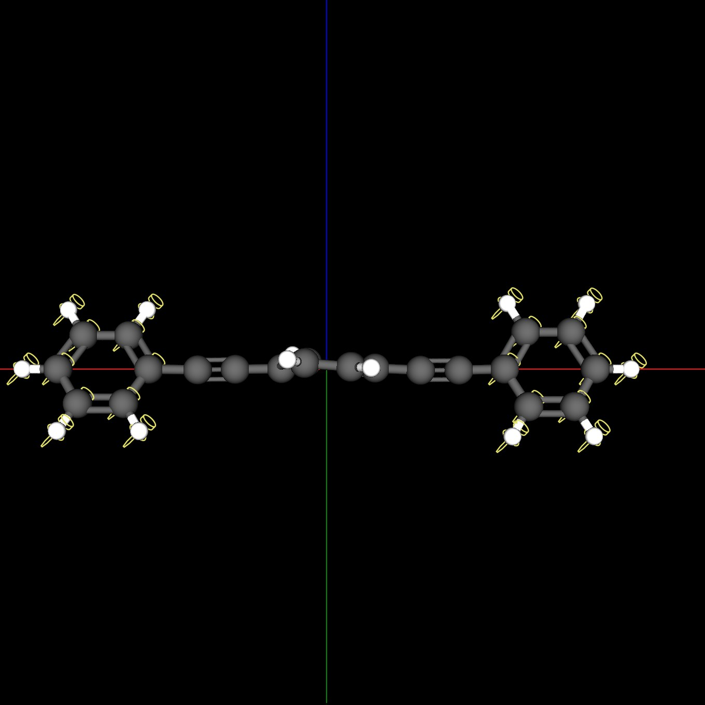
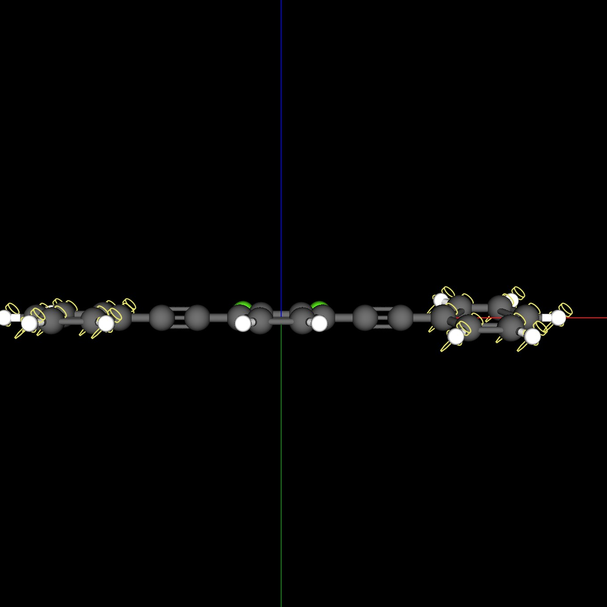
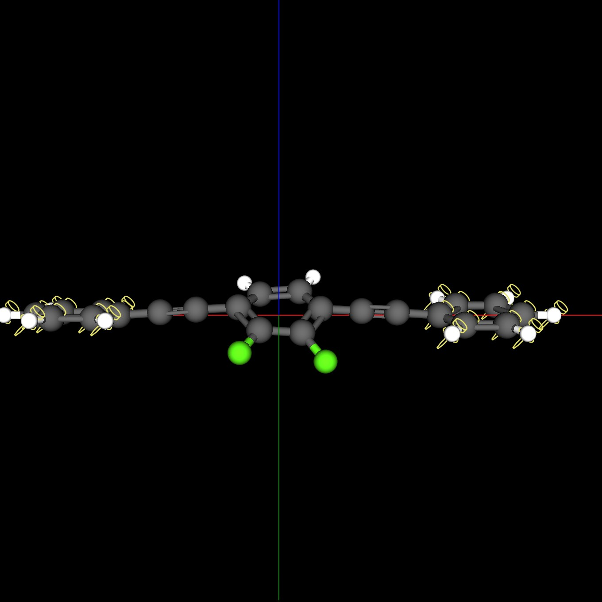
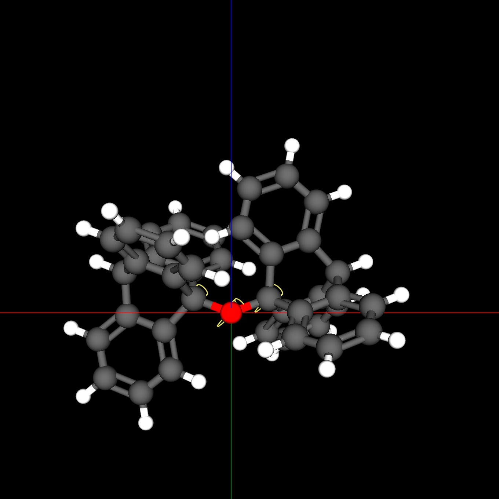
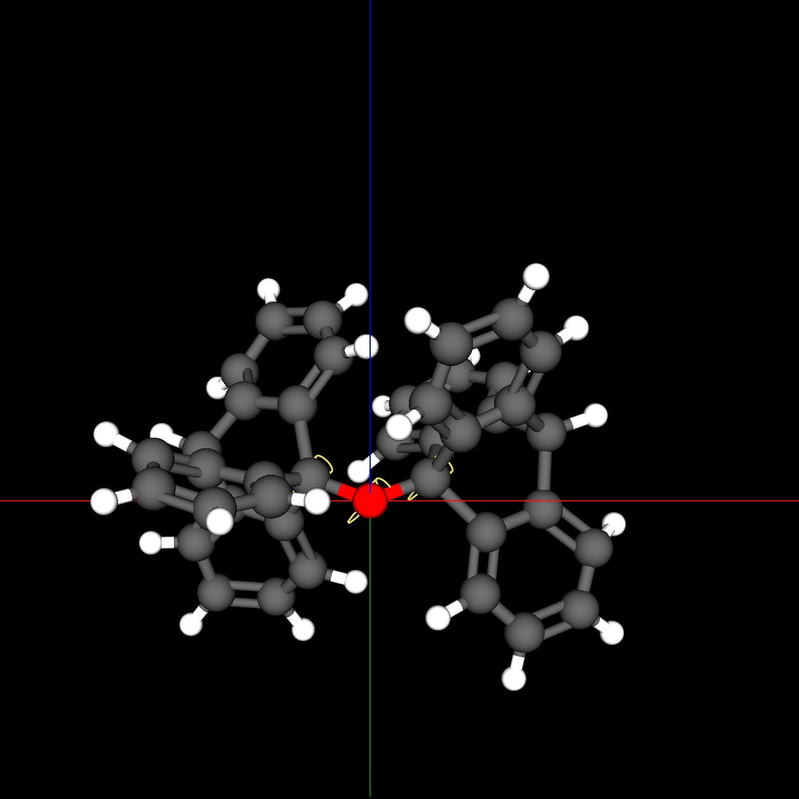

Molecular Rotors and Gears: Machine Parts That Turn
AIMS turns a ring on an axle with thermal motion, holds a ring with an electric field, and meshes two wheels as gears, and an AI agent measures each motion.
A wheel that turns on a shaft is the most common part of a machine. Chemists build wheels from single molecules: a flat ring of atoms that turns between two fixed groups is a rotor, and two wheels whose blades fit between each other are a gear. AIMS models every atom of such a part, and an AI agent sets up the experiments. A student asks a plain-language question, and the agent builds the molecules, runs them, measures the turning, and posts the measured data in the chat. This article follows three parts that turn: a rotor, a ring that turns freely between two fixed rings; a dipolar rotor, a ring that an electric field turns and holds; and a gear, two wheels that turn each other. It is the second of three articles. The article on molecular machines follows a shuttle, a clamp, an ion pump, and tweezers, and it describes the forces in the model and how to open an example and type a prompt. The article on nanotube machines follows parts that slide.
A Rotor on Triple-Bond Axles
A rotor is a part that turns, and the part that holds it is the stator. Chemists build molecular rotors from a flat ring of atoms held between two bulky groups by an axle of carbon–carbon triple bonds. Godinez, Zepeda, and Garcia-Garibay made such molecules in 2002 and called them molecular compasses and gyroscopes: the ring in the middle turns while the frame around it stays in place in the crystal. The electrons around a triple bond have the same distribution on every side of the bond, so a ring that turns about a triple bond meets almost no barrier.
The window below holds 1,4-bis(phenylethynyl)benzene: three benzene rings in a row, joined by two triple bonds. The molecule has 36 atoms and is 19 Å long. The 22 atoms of the two end rings are fixed in place and form the stator, and the lab marks each fixed atom with a pin. The middle ring is the rotor. The lab runs at 300 K with the Langevin thermostat, which gives every atom small random pushes, as the molecules of a surrounding gas would. Press Play and watch the middle ring.
Three benzene rings joined by two triple bonds, seen from above. The end rings are fixed, and the middle ring turns about the line of the triple bonds.
Open A Molecular Rotor from the list of examples (Nanotechnology, Molecular Machines), open the chat, and type the prompts below. The answer to the third prompt in the example keeps its last frame: press "Load this state" on its card and the lab shows p-terphenyl, the molecule with single-bond axles.
- Turning — “Run it for 30 ps and chart the angle between the middle ring and one of the end rings.”
- Temperature — “How does the temperature change the turning? Try 100 K, 300 K and 600 K.”
- Size and axle — “Try a larger ring as the rotor, and try single bonds as the axle.”
The Ring Turns in Both Directions
The agent ran the lab for 30 ps and charted the angle between the middle ring and one end ring. The middle ring covered 4.4 full turns of angle, an average of about 50° per picosecond. It changed direction nine times, and at the end of the run it was 534° from its starting angle. No force drives this rotor. The atoms of the ring exchange energy with the vibrations of the molecule and with the thermostat, and the turning speeds up, slows down, and reverses at random.
A rotor that turns by thermal motion is not a motor. It turns in each direction equally often over a long time, and it does no work. Kelly, Tellitu, and Sestelo tested this in 1997 with a molecule shaped like a ratchet, a toothed wheel with a pawl. The wheel of their molecule turned equally in both directions, as the second law of thermodynamics requires for a molecule at one temperature. A molecular motor needs an energy source, such as light or a chemical reaction, to turn in one direction.
Temperature, Size, and the Axle
One run of one rotor is too random to compare with another. The second prompt runs the molecule 12 times for 10 ps at each of three temperatures, each run with new random starting velocities, and averages the turning rate. A part that turns freely about one axis holds an average kinetic energy of half of kT, so its average turning rate is proportional to the square root of the temperature divided by the moment of inertia.
| Temperature | Average turning rate | Slowest and fastest run | Free rotor, calculated |
|---|---|---|---|
| 100 K | 43° per ps | 21 to 72° per ps | 44° per ps |
| 300 K | 61° per ps | 28 to 119° per ps | 77° per ps |
| 600 K | 78° per ps | 39 to 167° per ps | 108° per ps |
The turning rate of the benzene rotor, averaged over 12 runs of 10 ps at each temperature. The last column is the average rate of a ring of the same moment of inertia with no barrier.
The rotor turned faster at a higher temperature, and at 100 K the measured rate equals the calculated rate. At 300 K and 600 K the measured rate is lower than the calculated rate. The agent takes the rate from averages of the angle over 1 ps, and a fast rotor that reverses within a picosecond is counted short. The runs at one temperature differ by a factor of three or more, so the average needs many runs.
The third prompt changes the rotor and the axle. The agent ran each of four molecules eight times for 10 ps at 300 K with the end rings fixed.
| Rotor | Axle | Moment of inertia | Average turning rate | Angle covered in a run |
|---|---|---|---|---|
| Benzeneone ring | triple bonds | 90 amu Å2 | 69° per ps | 580° |
| Naphthalenetwo fused rings | triple bonds | 650 amu Å2 | 27° per ps | 170° |
| Anthracenethree fused rings | triple bonds | 1,110 amu Å2 | 19° per ps | 180° |
| Benzenein p-terphenyl | single bonds | 90 amu Å2 | 1° per ps | 20° |
Four rotors at 300 K, eight runs of 10 ps each. The moment of inertia is that of the turning ring about the axle.
A larger rotor turns more slowly at the same temperature. The anthracene rotor has 13 times the moment of inertia of the benzene rotor, and it turned at 19° per picosecond against 69°. In p-terphenyl the three benzene rings are joined directly by single bonds, and the middle ring covered 20° in a run: it rocks and does not turn over. The hydrogen atoms of a ring joined directly to its neighbor meet the hydrogen atoms of the neighbor, and the single bond between two rings resists twisting. The single bonds act as a brake. A triple bond holds the rings 2.6 Å farther apart and has no resistance to twisting in this model. In the real molecule the electrons of the three rings interact through the triple bonds and give the rings a small preference for one plane, and the force field of this lab has no such term.


The rotor at the start, with the three rings in one plane (left), and a few picoseconds after Play, with the middle ring a quarter turn from its starting angle (right). The yellow pins mark the fixed atoms of the stator.
A Rotor That an Electric Field Turns
A compass needle turns to point along a magnetic field. A molecule turns in an electric field if one side of it carries more negative charge than the other. Such a molecule has an electric dipole. A fluorine atom pulls electrons toward itself, so a ring with fluorine atoms on one side has a dipole across its axle. Horansky, Price, Garcia-Garibay, and coworkers studied a crystal of rotors with two fluorine atoms on the turning ring in 2006. Horinek and Michl simulated dipolar rotors mounted on a surface and driven by an electric field in 2005. A dipolar rotor is a part that an electric signal controls.
The window below holds the rotor of the last section with two fluorine atoms (green) on one side of its middle ring: 1,4-bis(phenylethynyl)-2,3-difluorobenzene. The two end rings are fixed. Each fluorine atom carries a charge of −0.20 e in the model, and the middle ring has a dipole of 3.4 D across its axle. The lab runs at 300 K with the Langevin thermostat, and a static electric field of 5 V/nm points up. The middle ring starts at a right angle to the field. Press Play and watch the fluorine atoms.
A rotor with two fluorine atoms (green) on its middle ring, seen from the side, in an electric field that points up. The field turns the fluorine side of the ring down within a picosecond of Play.
Open A Dipolar Rotor in an Electric Field from the list of examples (Nanotechnology, Molecular Machines), open the chat, and type the prompts below. The answer to the first prompt in the example keeps its last frame: press "Load this state" on its card and the lab continues from 20 ps.
- Field on — “Run it for 20 ps and chart the angle between the middle ring and one of the end rings.”
- Reverse — “Reverse the field and run another 20 ps.”
- Field off — “Turn the field off and run another 20 ps.”
- Strength — “How strong a field does it take to hold the ring? Try fields from 0 to 10 V/nm, and try the ring without fluorine.”
The Field Turns the Ring and Holds It
The field pushes each negative fluorine atom down and each positive carbon atom up, and the two pushes make a torque on the ring. In the first run the fluorine side of the ring reached the downward direction after 0.5 ps. The ring went past, swung back, and rocked about that direction like a pendulum, by up to 80° in the first swings and by 17° on average over the last 5 ps. It did not turn over. The energy of the dipole in this field is 14 times the thermal energy at 300 K. The swings became smaller as the thermostat took up the energy that the field gave to the ring.
The second prompt reverses the field. The fluorine side went up and reached the upward direction 1.0 ps after the reversal, swung past by up to 109°, and settled: over the last 5 ps it rocked by 7° on average. The ring is a switch with two positions, fluorine down and fluorine up, and the direction of the field selects the position. The third prompt turns the field off. The ring covered 3.1 full turns of angle in 20 ps, in both directions, as the rotor without fluorine does. While the field held it, the ring covered 0.8 of a turn in the same time, all of it rocking.
How Strong a Field?
The fourth prompt runs the molecule eight times for 12 ps at each of six field strengths and leaves the first 4 ps out of each run. The alignment in the table is the average cosine of the angle between the dipole and the field: 1 for a ring that always points along the field, and 0 for a ring with no preferred direction. The calculated column is the alignment of a dipole that turns in a plane at 300 K. It depends only on the ratio of the dipole energy to the thermal energy.
| Ring | Field | Dipole energy ÷ thermal energy | Time within 45° of the field | Alignment, measured | Alignment, calculated |
|---|---|---|---|---|---|
| With fluorine | 0 | 0.0 | 34% | 0.14 | 0.00 |
| With fluorine | 0.5 V/nm | 1.4 | 51% | 0.52 | 0.56 |
| With fluorine | 1 V/nm | 2.7 | 62% | 0.63 | 0.79 |
| With fluorine | 2 V/nm | 5.5 | 93% | 0.91 | 0.90 |
| With fluorine | 5 V/nm | 13.7 | 94% | 0.91 | 0.96 |
| With fluorine | 10 V/nm | 27.4 | 98% | 0.94 | 0.98 |
| Without fluorine | 10 V/nm | 0.0 | 18% | 0.02 | 0.00 |
The alignment of the middle ring with the field at 300 K, averaged over eight runs of 12 ps at each field. A ring with no preferred direction spends 25% of its time within 45° of any direction.
The alignment grows with the field and follows the calculated values within the scatter of eight short runs. A field of 2 V/nm holds the ring within 45° of the field for 93% of the time. The field competes with thermal motion, so a weaker field holds the ring as well at a lower temperature. The ring without fluorine has the same charges on both sides and no dipole across the axle, and a field of 10 V/nm gave it an alignment of 0.02.
Two limits apply. The charges of this lab give the ring a dipole of 3.4 D, and the measured dipole of 1,2-difluorobenzene is about 2.5 D, so the lab holds the ring more firmly than a real field of the same strength would. A field of several volts per nanometer is very strong. It exists near the tip of a scanning tunneling microscope and close to an ion, and a field between two metal plates is hundreds of times weaker.


The rotor at the start, with the middle ring at a right angle to the field (left), and a few picoseconds after Play, with the two fluorine atoms (green) turned down against the field (right).
Gears: Two Wheels That Mesh
The rotor above turns alone. In a gear, the teeth of one wheel sit between the teeth of another, and the turning of one wheel turns the other. The molecular wheel is triptycene: three benzene rings joined like the blades of a paddle wheel, 120° apart. In the 1980s the groups of Iwamura and Mislow joined two triptycene wheels through one atom, with the axles at an angle, so each blade of one wheel sits in the gap between two blades of the other. They found that the two wheels turn together in opposite directions and that one blade almost never slips past another.
The window below holds bis(9-triptycyl) ether, two triptycene wheels joined through one oxygen atom, 67 atoms in all. The oxygen atom and the two carbon atoms bonded to it are fixed in place and form the frame. The two axles are 135° apart. PubChem has no three-dimensional structure for this molecule, and the agent built it from two 9-methyltriptycene molecules. The lab runs at 1000 K. In the force field of this lab the wheels need more energy to pass from one meshed position to the next than the real molecule needs, and at 300 K the wheels only rock. The bonds of the molecule cannot break in this lab, so the temperature does no damage. Press Play and watch the two wheels.
Two triptycene wheels joined through an oxygen atom (red), seen from above. The wheels rock in place and, every few picoseconds, turn by a third of a turn in opposite directions.
Open Molecular Gears from the list of examples (Nanotechnology, Molecular Machines), open the chat, and type the prompts below. The answer to the third prompt in the example keeps its last frame: press "Load this state" on its card and the lab shows the gear with a CH2 group as the bridge.
- Gearing — “Run it for 40 ps and chart the angle of each wheel.”
- Temperature — “How does the temperature change the turning? Try 300 K, 600 K and 1000 K.”
- Bridge — “Try other bridges between the two wheels: a CH₂ group, and two carbon atoms in a line.”
The Wheels Turn in Opposite Directions
The agent ran the lab for 40 ps and charted the angle of one blade of each wheel. At the end of the run the first wheel had turned +180° and the second −173°, each measured about its own axle. The wheels rocked in one meshed position for several picoseconds at a time and then moved together by a third of a turn. Two wheels that mesh turn by equal and opposite angles, so the sum of the two angles stays constant, and a slip of one blade past another changes the sum by 120°. The sum stayed within 70° for the whole run. No force drives the wheels. A step happens when the thermal motion carries both wheels over the barrier at the same time.
The second prompt runs the molecule four times for 20 ps at each of three temperatures.
| Temperature | Angle a wheel covered in a run | Steps of a third of a turn in 80 ps | Largest change in the sum of the angles |
|---|---|---|---|
| 300 K | 50° | 0 | 50° |
| 600 K | 110° | 1 | 60° |
| 1000 K | 140° | 3 | 80° |
The gear at three temperatures, four runs of 20 ps each. A slip of one blade past another would change the sum of the two wheel angles by 120°.
The wheels made no step at 300 K, one step at 600 K, and three steps at 1000 K. A count that rises with temperature shows a barrier that the thermal motion has to cross. The counts are too small to give the height of the barrier. The real molecule turns at room temperature, so its barrier is much lower than the barrier of this model. The sum of the two angles changed by less than 120° at every temperature: the wheels stayed meshed, and no blade slipped, at 1000 K as at 300 K.
The Bridge Between the Wheels
The third prompt changes the bridge and runs each molecule four times for 20 ps at 1000 K with the atoms of the bridge fixed.
| Bridge | Angle between the axles | Angle a wheel covered in a run | Largest change in the sum of the angles | Result |
|---|---|---|---|---|
| One oxygen atom | 135° | 140° | 80° | gear |
| One CH2 group | 129° | 190° | 70° | gear |
| Two carbon atoms in a line | 180° | 570° | 940° | the wheels slip |
Three bridges between two triptycene wheels at 1000 K, four runs of 20 ps each.
A CH2 group as the bridge also gives a gear: the sum of the two angles stayed within 70°. With two carbon atoms in a line as the bridge, the two axles lie on one line and the wheels face each other 4 Å apart. The fixed atoms all lie on that line, so the pair can turn about it, and each wheel covered 570° in a run. The sum of the two angles changed by up to 940°, so one wheel slipped past the other many times, and the two wheels turned almost independently. A gear needs its wheels close enough for the blades of one to block the blades of the other.


The two wheels at the start (left) and after about 20 ps at 1000 K (right). The blades of each wheel have moved, and a blade of one wheel still sits between two blades of the other.
Turning Without a Direction
None of the three parts in this article is a motor. The rotor and the gear turn by thermal motion, which has no preferred direction. The electric field holds the dipolar rotor in one of two positions and does not make it turn around and around. A machine that moves in one direction needs a supply of energy that selects the direction. The article on nanotube machines ends with such a machine, a cargo that a flow of heat moves along a nanotube, and it describes what the lab cannot model.
What the Simulations Produced
The simulations were given the charges and the sizes of the atoms. Everything below came out of them:
- A rotor — a benzene ring on triple-bond axles turns at 43, 61, and 78° per picosecond at 100, 300, and 600 K, in both directions, and a ring on single-bond axles rocks 20° and does not turn over.
- A dipolar rotor — an electric field of 5 V/nm turns a ring with two fluorine atoms in 0.5 ps and holds it, the reversed field turns it over in 1.0 ps, and the alignment follows the calculated values for a dipole at 300 K.
- A gear — two triptycene wheels joined through one oxygen atom turn by +180° and −173° in 40 ps at 1000 K, and no blade slips past another at any temperature tried.
Conclusion
This article uses a molecular rotor, a dipolar rotor, and molecular gears to illustrate a new way to learn science: students converse with an AI agent that turns a plain-language question into a molecular dynamics experiment and hands back measured data. The parts of a molecular machine that turn become something students watch and measure for themselves in a browser: how a ring turns on an axle with thermal motion alone, how an electric field holds a ring with a dipole, and how two meshed wheels turn each other. By pairing a physically grounded simulation with an AI that can set it up and run it, AIMS turns a student's curiosity into a genuine scientific investigation of the parts that molecular machines are made of.
← Back to AIMS